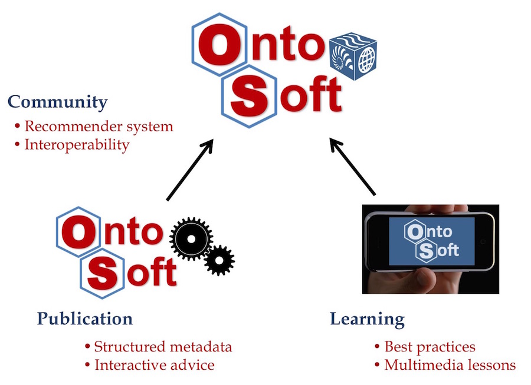

The OntoSoft project is part of the NSF EarthCube Initiative. The NSF EarthCube Initiative aims to enable scientists to solve challenging problems that span diverse geoscience domains. This requires not only data sharing, it requires new forms of knowledge sharing. The focus of OntoSoft is to promote knowledge sharing about the software developed for geosciences.
Geosciences software embodies important scientific knowledge that should be explicitly captured, curated, managed, and disseminated. Recurring issues of provenance and uncertainty in the context of data could be better addressed with improved treatment of geoscience software: it is easy to see that nothing describes data more precisely than the software that generates or uses the data. Software is implicitly linked to its documentation, datasets it uses or produces, publications, and ultimately scientific theories. Scientists recognize the value of sharing software to avoid replicating effort or to reproduce results from others. However, the stewardship of software in geosciences must be greatly improved.
First, while modeling frameworks have dramatically improved software sharing, there are orders of magnitude more codes devoted to preparing data for input to a model (what we could call “pre-model software”) and preparing data that results from a model (“post-model” software). Studies show that scientists spend between 60%-80% of a project’s effort collecting and preparing data before doing new science. This would indicate a significant overhead in developing pre-model software for data preparation is only rarely shared (e.g., through libraries such as NetCDF-Java, the recent Apache OCW effort, and NumPy) and rarely reused, particularly across disciplines. While the loss of “dark data” in science is well recognized, we see an analogous problem in the pervasive loss of “dark software”. It leads to wasted investments, particularly for younger researchers that are often charged with such tasks, which often go unnoticed.
Second, the inaccessibility of software as an explicit science product that, like data, should be shared and reused leads to barriers for those who cannot afford such investments, and to barriers for software experts that could otherwise become involved in supporting software efforts.
Finally, the education of future scientists crucially depends on the ability to actively explore problems by experimenting with science-grade data and software. This will not be possible unless science software is captured and properly disseminated. In summary, although geoscientists program a lot of code to analyze their data, that important software is often not shared and rarely preserved.
The goal of the OntoSoft project is to enable the creation of a germinal ecosystem for software stewardship in geosciences that will empower scientists to manage their software as valuable scientific assets in an open transparent mode that enables broader access to that software by other scientists, software professionals, students, and decision makers.
Scientific software stewardship requires a combination of cyberinfrastructure, social infrastructure, and professional development infrastructure. Our cross-disciplinary team has had direct experience with a variety of aspects of the scientific software lifecycle, from conception to development, deployment, characterization, integration, composition, and dissemination through open source communities and geosciences modeling frameworks.

Our work focuses on:
The OntoSoft project will result in a germinal social site for the EarthCube, where scientists can discover alternative approaches to release free software, use intelligent interfaces to explain how their software works, and form productive communities around software projects.
This research has the potential to fundamentally transform geosciences by making scientific software readily available to researchers and citizen scientists for efficient data analysis.
More broadly, this work will improve our understanding of how to promote software sharing in science, support better software stewardship, and capture metadata for scientific software.